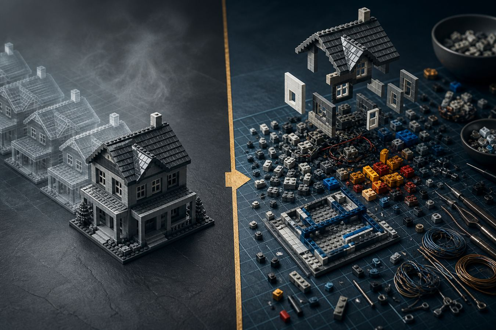
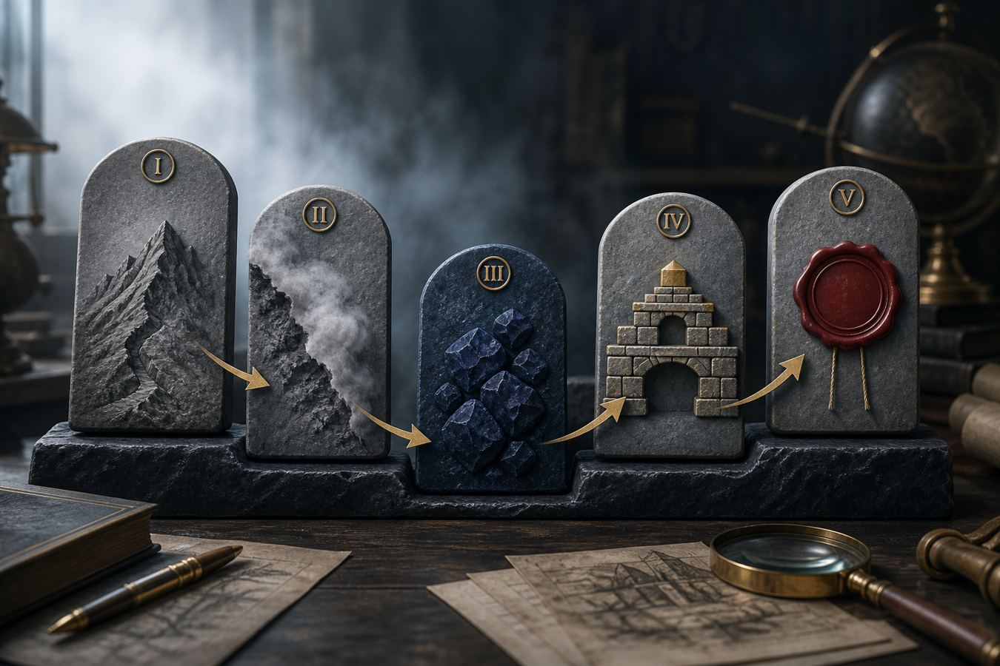

Start with what is true in this problem. Strip the inherited story. Rebuild. Test. Analogy is a cook’s recipe. This is a chef’s kitchen.
A first principle is a truth you cannot usefully break down further in this problem. Not a slogan. Not “how we do it.” The bedrock. Then you reason up.

Left: analogy — copy the house, iterate the trim. Right: first principles — take it to bricks, then decide if you even want a house.
“This worked for them.” “That’s how it’s always been done.” “Everyone does X.” You start with what exists and make a small variation. Fast. Cheap. Mentally easy. Bound by someone else’s furniture.
Name what you are sure is true. Discard the rest as assumption until proven. Build a new structure from those pieces. Slow. Expensive in attention. The only way to get a non-linear answer.
Jay (@jaynitx) put it simply: you don’t start with what exists or what others are doing. You start with what’s fundamentally true and work forward. His own miss: after dropping out he assumed he had to be on every platform. First-principles cut: what am I trying to do, who actually cares, where do those people already spend time? Mostly X. Maybe YouTube. Not Instagram for that niche.
Tim Urban’s picture (Wait But Why): the cook follows a recipe. The chef starts from raw ingredients. Most of life should be cook work. The chef is for the problem that will punish a copied recipe.

I name the problem · II strip the fog · III keep only bedrock · IV rebuild · V seal it with a test.
Two tools for the strip: Socratic questions (below) and the Five Whys — keep asking until you hit “I don’t know, let’s look it up” instead of “because I said so.”
Musk: it takes more mental energy. Jay is honest that it is not always the right method. Use the gate.
Reversible. Cheap if wrong. The recipe is known. Speed matters more than originality. Daily ops, a known meeting, a proven form.
Non-linear payoff. High cost of being wrong. The industry story feels stale. You are inventing, not iterating. Someone is about to spend real money or years.
Calling a preference a “first principle” is cosplay. If it cannot survive “what would change my mind,” it is branding.
Pick one live problem. Write it. Then answer in order. Answers stay on this device.
If this takes a paragraph, you are still in the analogy.
Cheap and reversible → cook. Expensive or one-way → chef.
Name the person or firm. If you cannot, you are copying a ghost.
List them. Be unkind to your own sentences.
This is the Socratic “what if I thought the opposite.”
Five Whys. The last honest line is the one that matters.
Farnam Street: irreducibles in context. Not the atom unless you need the atom.
What is it made of, what does that actually cost, who actually has to show up?
Keep a piece only if it survives, not because it is familiar.
No falsifier = belief. No named owner = theater.
Related, not the same: Musk’s later five-step algorithm (make requirements less dumb, delete, simplify, accelerate, automate — in that order). That is operations after the principle is found. Do not automate a lie.
Seed: @jaynitx — first principles thinking: how to see what everyone else misses (X blocked a direct pull; core claims checked against a public cache).
Shane Parrish, Farnam Street, “What is First Principles Thinking?” — Socratic list, Five Whys, Lego / rocket / BuzzFeed / Sivers. fs.blog/first-principles
Elon Musk with Kevin Rose, Foundation interview, Sep 2012 — analogy vs physics; battery $600 vs about $80/kWh materials. video
Tim Urban, “The Cook and the Chef: Musk’s Secret Sauce,” Wait But Why, Nov 2015. waitbutwhy.com
Aristotle, Physics 184a10–21; Metaphysics 1013a14–15. Feynman on fragile rote knowledge. Harrington Emerson: principles few, methods many.